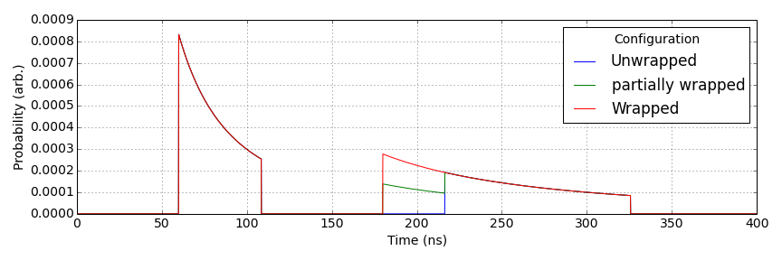
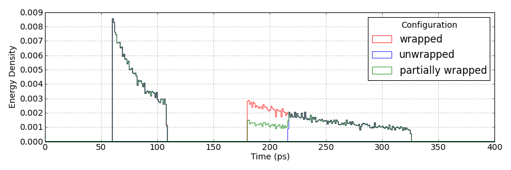

Analytical Light Transport
On this page we will give the derivation for the specular PDF, $p(t)$. The analytical expression is shown above as a sum of two modes; Namely the forward and backward, corresponding to light transport within a regular cuboid scintillator crystal of dimensions $2\times2\times20$mm$^3$, with a depth of interaction (DOI) of 10mm.
The above image is the specular PDF taken from Monte-Carlo ray tracing of a regular cuboid.
The Derivation
We begin by looking at an isotropic source placed between two infinite faces. The source is a distance, DOI, from one face, which we shall refer to as the top face. The opposing face shall be referred to as the bottom face. The two faces are separated by a distance $L$. Between the two faces the refractive index is $n_s$. Using the time-averaged Poynting vector incident per unit solid angle, , the power ($P$) per unit solid angle, can be defined as \begin{align} \frac{dP}{d\Omega} = \frac{r^2}{2}\vec{n}.\vec{E}\times\vec{H^*} \end{align} where $\vec{n}$ is the direction of interest, $\vec{E}$ is the electric field, $\vec{H}^*$ is the complex conjugate of the magnetic field and $\Omega$ is the solid angle subtended. For a spherical wave we therefore find \begin{align} \begin{pmatrix}\vec{E} \\ \vec{H}\end{pmatrix} &= A_0\begin{pmatrix}\hat{\theta} \\ \hat{\phi}\end{pmatrix}\frac{1}{r}e^{i\vec{k}.\vec{r}}e^{-i\omega t}\\ \therefore \frac{dP}{d\Omega} &= \frac{A_0^2}{2}\vec{n}.\vec{r} \end{align}
By letting $\vec{n}=\vec{r}$, we find the power per unit solid angle is constant regardless of direction. This is as expected for an isotropic source. Integrating over the solid angle with ranges $\{\theta,\theta_1,\theta_2\}$ and $\{\phi,0,2\pi\}$ it can be shown that
\begin{align} P(\theta_1,\theta_2) &= \int \frac{dP}{d\Omega} d\Omega = \frac{A_0^2}{2}\int\limits_{\phi=0}^{2\pi}\int\limits_{\theta=\theta_1}^{\theta_2}\sin\theta d\theta d\phi \\ &=\pi A_0^2(\cos\theta_1-\cos\theta_2) \end{align}
Consider $\theta_1$ is zero with $\theta_2=\theta$ we arrive at \begin{align} P(\theta) &= \pi A_0^2(1-\cos\theta)\\ F(\theta) = \frac{P}{P_0} &= \frac{1}{2}(1-\cos\theta) \end{align} where $P_0$ is total power emitted into the full $4\pi$ sphere which can be seen to be $2\pi A_0^2$. To find the power per unit angle consider $\theta_1=\theta$ and $\theta_2=\theta+d\theta$, such that \begin{align} dP &= \frac{P_0}{2}(\cos\theta - \cos(\theta+d\theta))\\ \therefore \frac{1}{P_0}\frac{dP}{d\theta}&=\frac{1}{2}\sin\theta \end{align}
For an isotropic source a distance $z$ from the boundary we see \begin{align} t(\theta) = \frac{n\text{z}}{c}\frac{1}{\cos\theta} = \frac{t_0}{\cos\theta} \end{align} \begin{align} \frac{d\theta}{dt}=\frac{1}{t_0}\frac{\cos^2\theta}{\sin\theta} \end{align} where $c$ is the speed of light and $t_0$ is the minimum time to the top face. Combining this with the power per unit theta, results in the rate of change of power with time giving, \begin{align} \frac{dP}{dt} = \frac{t_0P_0}{2}\frac{1}{t^2} \end{align} Given a maximum allowed travel time, $t_1$, due to the critical angle of the boundary, a PDF defining the light transport, $p(t)$, can be found by
\begin{align} p(t)= A\frac{t_0P_0}{2}\int\limits_{t=t_0}^{t_1}\frac{1}{t^2}dt = 1 \end{align}
where $t_1=\frac{t_0}{\cos\theta_c}$ the PDF defining light transport for the perfectly specular case is given by
\begin{equation} p(t|t_0,\theta_c) = \frac{t_0}{1-\cos\theta_c}\frac{1}{t^2} \end{equation}